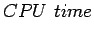
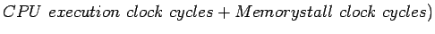
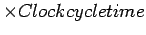
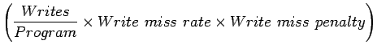

เมื่อพิจารณาการ Stall ที่เกิดจาก Miss ค่าประสิทธิภาพของคอมพิวเตอร์ในรูปแบบของ CPU time จะเท่ากับ
|  |  | (7.9) | |
|  | (7.10) |
ซึ่งวงรอบของ Memory Stall ส่วนใหญ่เกิดจาก Cache Miss โดยสามารถนิยามได้ดังนี้
| (7.11) |
ซึ่งสามารถเขียนตามความสัมพันธ์ของ Miss rate ได้ดังนี้
| (7.12) |
ในแคชแบบ Write Through ค่าการ Stall สามารถคำนวณได้จาก
|  | (7.13) | ||
| (7.14) |
ในแคชแบบ Write Through ส่วนใหญ่แล้ว Miss Penalty มีค่าใกล้เคียงกันสำหรับทั้งการ Read และ Write โดยสามารถ พิจารณา ค่า Miss rate เพียงค่าเดียว แสดงโดยสมการ
| (7.15) |
| (7.16) |